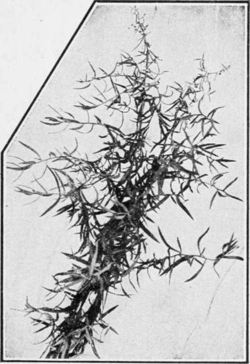

Tarragon
Description
This section is from the book "Culinary Herbs", by M. G. Kains. Also available from Amazon: Culinary Herbs, Their Cultivation, Harvesting, Curing and Uses.
Tarragon
Tarragon (Artemisia Dracunculus, Linn.), a fairly hardy, herbaceous rather shrubby perennial of the Compositae, supposed to be a native of southern Russia, Siberia, and Tartary, cultivated for scarcely more than 500 years for its leaves and tender shoots. In all civilized countries its popular name, like its specific name, means dragon, though why it should be so called is not clear.
Description
The plant has numerous branching stems, which bear lance-shaped leaves and nowadays white, sterile flowers. Formerly the flowers were said to be fertile. No one should buy the seed offered as tarragon. It is probably that of a related plant which resembles tarragon in everything except flavor-which is absent! Tagetes lucida, which may be used as a substitute for true tarragon, is easily propagated by seed and can be procured from seedsmen under its own name. As tarragon flowers appear to be perfect, it is possible that some plants may produce a few seeds, and that plants raised from these seeds may repeat the wonder. Indeed, a variety which naturally produces seed may thus be developed and disseminated. Here is one of the possible opportunities for the herb grower to benefit his fellow-men.
Tarragon, the French Chef's Delight
Cultivation
At present tarragon is propagated only by cuttings, layers and division. There is no difficulty in either process. The plant prefers dry, rather poor soil, in a warm situation. In cold climates it should be partially protected during the winter to prevent alternate freezing and thawing of both the soil and the plant. In moist and heavy soil it will winterkill. Strawy litter or conifer boughs will serve the purpose well. Half a dozen to a dozen plants will supply the needs of a family. As the plants spread a good deal and as they grow 15 to 18 inches tall, or even more, they should be set in rows 18 to 24 inches apart each way. In a short time they will take possession of the ground.
Uses
The tender shoots and the young leaves are often used in salads, and with steaks, chops, etc., especially by the French. They are often used as an ingredient in pickles. Stews, soups, croquettes, and other meat preparations are also flavored with tarragon, and for flavoring fish sauces it is especially esteemed.
Probably the most popular way it is employed, however, is as a decoction in vinegar. For this purpose, the green parts are gathered preferably in the morning and after washing are placed in jars and covered with the best quality vinegar for a few days. The vinegar is then drawn off as needed. In France, the famous vinegar of Maille is made in this way.
The leaves may be dried in the usual way if desired. For this purpose they are gathered in midsummer. A second cutting may be made in late September or early October. Tarragon oil, which is used for perfuming toilet articles, is secured by distilling the green parts, from 300 to 500 pounds of which yield one pound of oil.
Continue to:
- prev: Tansy
- Table of Contents
- next: Thyme